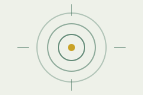
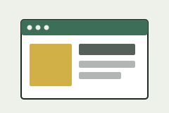

Olwethu Mpushe

Why I'm here
I started WDD 131 to build a real, working foundation in HTML, CSS, and JavaScript — not just enough to copy a tutorial, but enough to build a page from a blank file and understand every line of it. This course is my first step toward a web development certificate, and this page is the first thing I've built entirely on my own.

What I'm building
Over the semester I'll turn this page into a small portfolio site, adding a project gallery, a contact form, and a few interactive features with vanilla JavaScript. My goal for the final project is a clean, fast, accessible site that loads in well under a second on a typical connection.